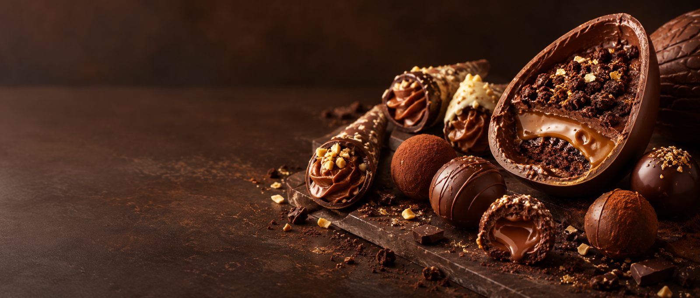
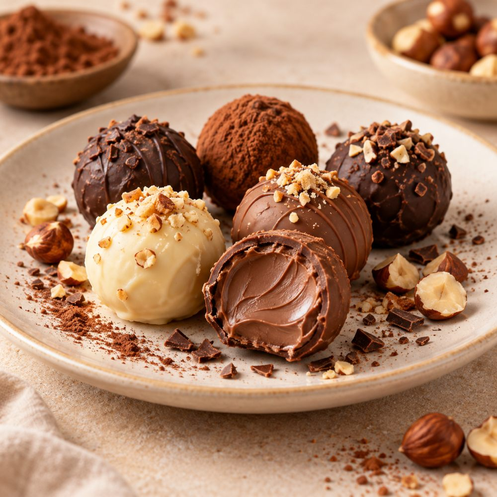
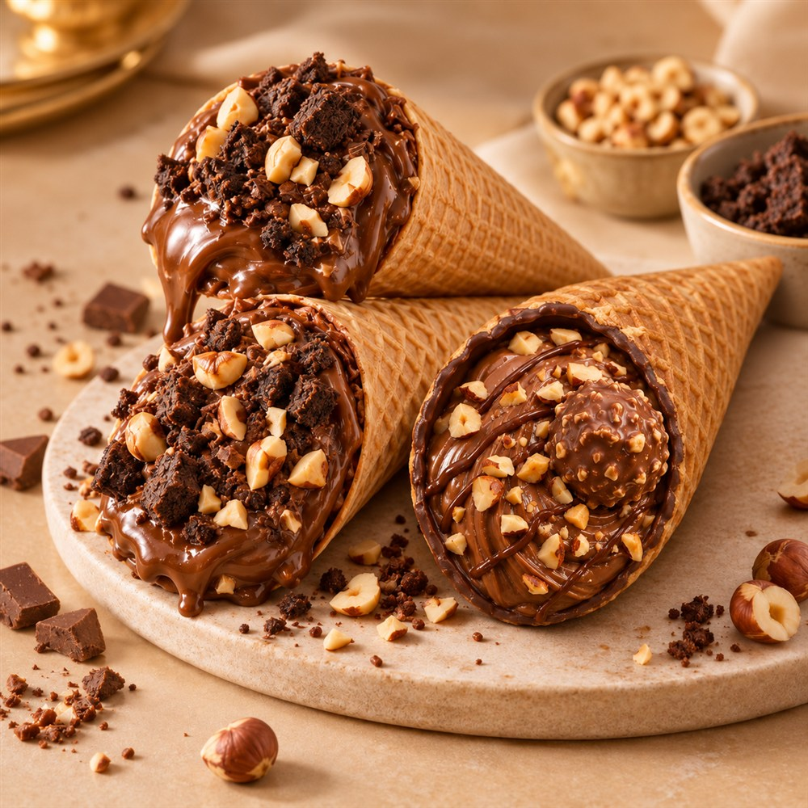
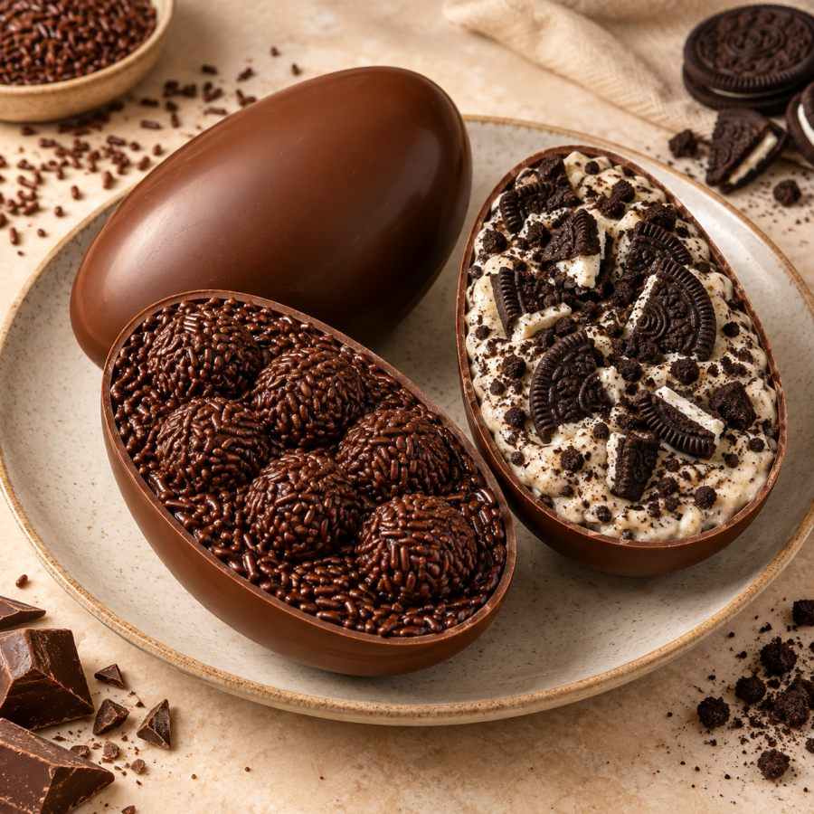

Confeitaria artesanal
Só mais uma
mordida.
A casquinha quebra. O recheio derrete. E a vontade é de provar todos. Encontre o doce que vai deixar seu dia mais gostoso.
Escolher meu doceTrufas a partir de R$ 3,00 · Um carinho em forma de chocolate

Casquinhas crocantesRecheios cremososCombinações irresistíveis

UMA PAUSA DOCEPequenas tentaçõesTrufas →
CROCÂNCIA + CREMOSIDADERecheio até o fimCones →
CHOCOLATE EM CADA COLHERADAOvos de PáscoaOvos →Permita-se uma pausa
Seu dia merece
um pouco de doçura.
Encontrar meu favorito Fotos ilustrativas. A apresentação dos doces pode variar.